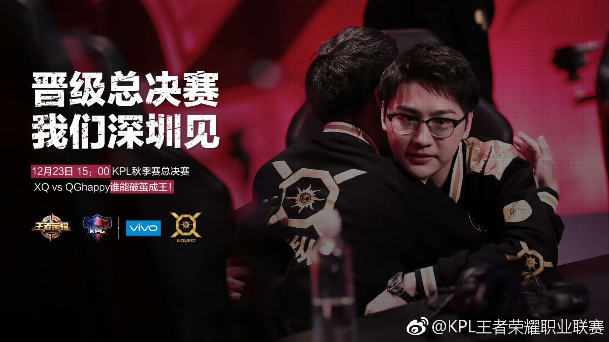

赛事回顾
2017年KPL秋季赛，当时还作为“逐日之灵”的XQ以黑马之姿开启逆袭征程。 觉醒的他们展现出势如破竹的竞技状态，成功锁定总决赛门票，与彼时风头正盛的QGhappy（现重庆狼队）会师深圳华润深圳湾体育中心“春茧”体育馆。 决赛场上，双方展开六局精彩对决，凭借全新的体系与顽强的意志，不断展现他们的实力，最终，面对QGhappy成熟的团队运营与后期发力，XQ以2:4憾负对手，斩获赛季亚军。
关键数据
- 总比分: XQ VS QGhapy 2:4
- 首发阵容：
对抗路：7Kill（邓磊）
打野：放纵（王靖宇）
中路：AT（陈顺吉）
发育路：Knight(陈名铭）
辅助：随风（陈涛） - FMVP：QGhappy.FLY
舆论反馈
从常规赛八连胜到季后赛突围，XQ的强势表现点燃了粉丝热情，“双Q大战”成为全网热议焦点，大家期待这支敢打敢拼的队伍能掀翻王朝，“XQ冲冠”的呼声不绝于耳 。 失利之后，惋惜与敬意充斥舆论场。粉丝们共情队员们的拼尽全力，尤其认可他们在3:1落后时不放弃的坚韧。而AT赛后回望银龙杯的画面，也成为KPL赛场的经典名场面。 即便与冠军失之交臂，粉丝们的支持依旧坚定。就好像他们的口号“战无止境，逐光不止”，大家坚信这支年轻的队伍能从失利中汲取经验，未来终将站上巅峰。而这场精彩对决也被观众铭记，成为KPL早期赛事中极具代表性的经典战役。
返回荣誉合集